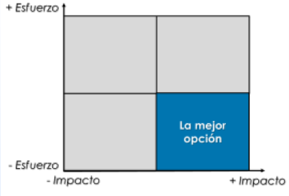
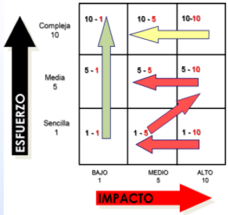
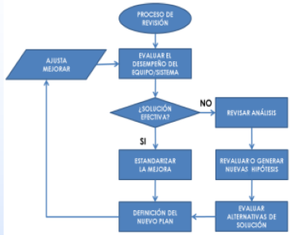

Luego de identificadas las causas raíz que generan el problema, se elabora una estrategia (plan de acción), para eliminar o mitigar las consecuencias que cada causa identificada ejerce sobre el proceso. Estas acciones de acuerdo con su impacto se priorizan a través de un ejercicio de jerarquización.
Durante la solución del problema se implementan tres niveles de acciones, durante la fase inicial se implementan acciones correctivas inmediatas para restaurar la operación del equipo o sistema; una vez identificada las causas, se asignan las acciones de solución del problema y finalmente se instauran acciones para confirmación de la solución (monitoreo de resultados).
A continuación, se detallan estas acciones:
Acción Inmediata
Implementar contramedidas temporales en el lugar del problema (típicamente acciones correctivas). Mientras más lejos se determine la solución de la fuente del problema, menos probable será que la acción temporal sea efectiva. Las contramedidas temporales se emplean para restaurar la operación del equipo, pero podrían no resolver la causa raíz.
Acción Solución
Determine, priorice e implemente las acciones que solucionen las causas raíz identificadas como generadora o detonadora del problema o falla (acciones que eviten la repartición o mitiguen las consecuencias que genera estas causas). Estas acciones pueden ser del tipo predictivas, preventivas, correctivas u orientadas al rediseño.
Confirmar la Solución
Después de que las acciones han sido determinadas e implementadas el éxito del enfoque adoptado necesita ser establecido; para ellos debe establecerse reglas o métodos (KPI´s que permitan medir el grado de éxito o fracaso).
Plan de acción
El Plan de Solución establecido debe seguir los siguientes pasos:
-
•
Generar las acciones que eliminen, mitiguen o controlen las causas raíz detectadas. Evaluar costos de las acciones.
-
•
El Equipo Natural de Trabajo Presentara los resultados del ACR y el plan de acción, a la gerencia.
-
•
Identificar los medios para seguimiento de las acciones.
-
•
Reportar los beneficios obtenidos producto de la implementación.
Enunciado de la Tarea
Es importante enunciar clara y específicamente la tarea a realizar, esta debe corresponder con las causas identificadas, para eliminar o mitigar sus consecuencias, también debe evaluarse entre alternativas y seleccionar aquella que arroje la mejor solución costo-efectiva, para ello siga los siguientes pasos:
1
Ser específico en el enunciado de la tarea.
2
Establecer, paso a paso qué hacer.
3
La Tarea, deberá garantizar la eliminación definitiva cada causa identificada o la mitigación de sus consecuencias.
4
Se podrá tener acciones que eliminan varias causas de forma directa.
Prioridad Cualitativa
En oportunidades se nos presenta dificultades para establecer las prioridades en la implementación de acciones de solución. Para ello podemos usar técnicas cualitativas y cuantitativas que nos permita jerarquizar las acciones de acuerdo con los criterios establecidos para la selección.
Para garantizar el éxito de la implementación y el apoyo de las gerencias involucradas, para otorgar los recursos necesarios, es importante mostrar resultados en el corto plazo (Victorias Tempranas), pero nos encontramos con la decisión de por cual alternativa comenzar. Para ello, existe una herramienta que contribuye a visualizar la decisión a tomar, en función del esfuerzo – impacto.
Esta herramienta nos permite tomar decisiones en base a la identificación del potencial de cambio de determinadas acciones.
La matriz de prioridades Esfuerzo-Impacto se basa en dos ejes:
El eje Y de esfuerzo, que muestra la complejidad o facilidad de implementar la mejora.
El eje X de impacto de la mejora.

Situaremos cada una de las acciones que queramos evaluar en la matriz según su grado de impacto y esfuerzo. Así podremos tomar decisiones rápidamente evaluándose de la siguiente manera:
Las acciones con nivel de esfuerzo alto y bajo impacto nos consumirán muchos recursos sin ser recompensados, por lo que deberemos descartarlas.
Las acciones con poco esfuerzo y un nivel bajo de impacto son actividades menores, por lo que podremos dejarlas en un segundo plano.
Las acciones de bajo esfuerzo y un impacto alto son foco de ganancias rápidas y en las que nos deberemos enfocar principalmente.
Y aquellas con nivel de esfuerzo e impacto alto podrán derivar en grandes proyectos que deberemos planificar con detalle.
A continuación, se muestra una matriz esfuerzo-impacto:

Elaboración de una Matriz de prioridades:
1
Hacer un listado de las oportunidades de mejora.
2
Definir los ejes de esfuerzo e impacto.
3
Colocar las oportunidades en la matriz de prioridades.
4
Establecer planes de implementación de solución, de acuerdo a las prioridades.
Monitorear el sistema
Para realizar una evaluación de las soluciones propuestas, una vez implementadas, se pueden utilizar una variedad de herramientas, dentro de las cuales las auditorías técnicas y de gestión son recomendables.
Deben establecerse puntos de medición claves para evaluar el grado de éxito o fracaso de las soluciones.
Puede emplearse parámetros técnicos, que midan el funcionamiento y desempeño del equipo o sistema, tales como presión, temperatura, flujo, potencia, etc., o indicadores de gestión (KPI’s) de mantenimiento, seguridad, finanzas, entre otros.

Presentación de resultados
Se debe desarrollar un formato acordado por el equipo de trabajo, para presentar los resultados del RCA que resuma el análisis y capture los resultados requeridos del análisis; el resumen de la presentación debe incluir lo siguiente como mínimo:
Una descripción general de cada causa que requiere acción junto con suficiente información de antecedentes y detalles, para garantizar que se comprenda la necesidad de abordar cada causa y se puedan identificar las acciones a tomar.
Un conjunto de opciones para las acciones de tratamiento y, cuando sea posible, y dentro del alcance un resumen de los beneficios y costos de cada una.
Acciones recomendadas para abordar cada una de las causas identificadas.
Las acciones correctivas recomendadas deben evaluarse para determinar su
efectividad y
realismo. En general, las acciones correctivas tienen como objetivo lograr lo siguiente:
-
•
Cambiar la probabilidad del evento de enfoque y / o sus consecuencias (es decir, reducir la probabilidad o consecuencia de eventos indeseables o aumentar la probabilidad o consecuencia de eventos exitosos).
-
•
No introducir nuevos riesgos inaceptables, por ejemplo. la seguridad de otros sistemas no debe verse degradada por la acción correctiva propuesta.
Cuando se identifican acciones, deben revisarse antes de la implementación para determinar si no solo han abordado las
causas fundamentales, sino que tampoco han introducido nuevas consecuencias inesperadas y, por lo tanto, funcionarán según lo previsto. También se debe monitorear la recurrencia del mismo evento o de uno similar para evaluar la efectividad de las acciones tomadas,
Fuente: BS EN 62740:2015.
Ajustar / Mejorar
Luego de evaluar por un periodo prudencial establecido, el desempeño de las acciones de solución y mejora implementadas, se deben realizar ajustes a aquellas acciones que no alcanzaron el grado de éxito esperado, que contribuyan a garantizar la mejora del proceso, de acuerdo con los objetivos planteados en el Plan de Acción. Estos ajustes o cambios, son quizás la fase más importante, que contribuye a garantizar la mejora continua del proceso, en cuanto, al desempeño del equipo o sistema.
Luego de medir, durante un nuevo periodo acordado, establecido para evaluar el desempeño de las acciones de solución ajustadas; al alcanzar los resultados planteados en los objetivos, deberá reportar el nivel de éxito a la dirección y difundir dichos resultados al resto de la organización (a través de charlas, carteleras, revistas corporativas entre otros); sin dejar de realizar reconocimientos al equipo de trabajo que logró dichos resultados (a través de diplomas o placas entregadas en juntas o reuniones, carteleras, correspondencia física o electrónica, etc.).